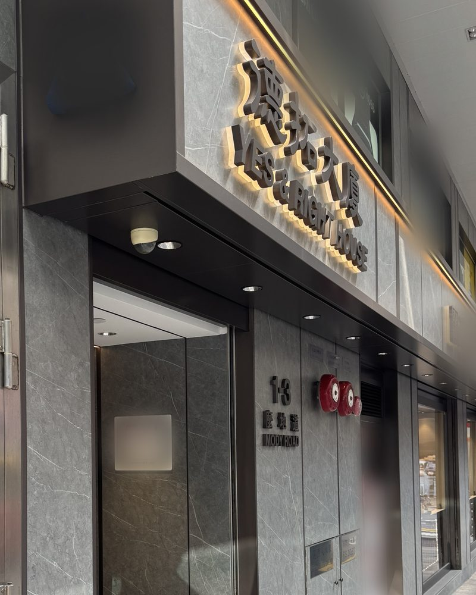
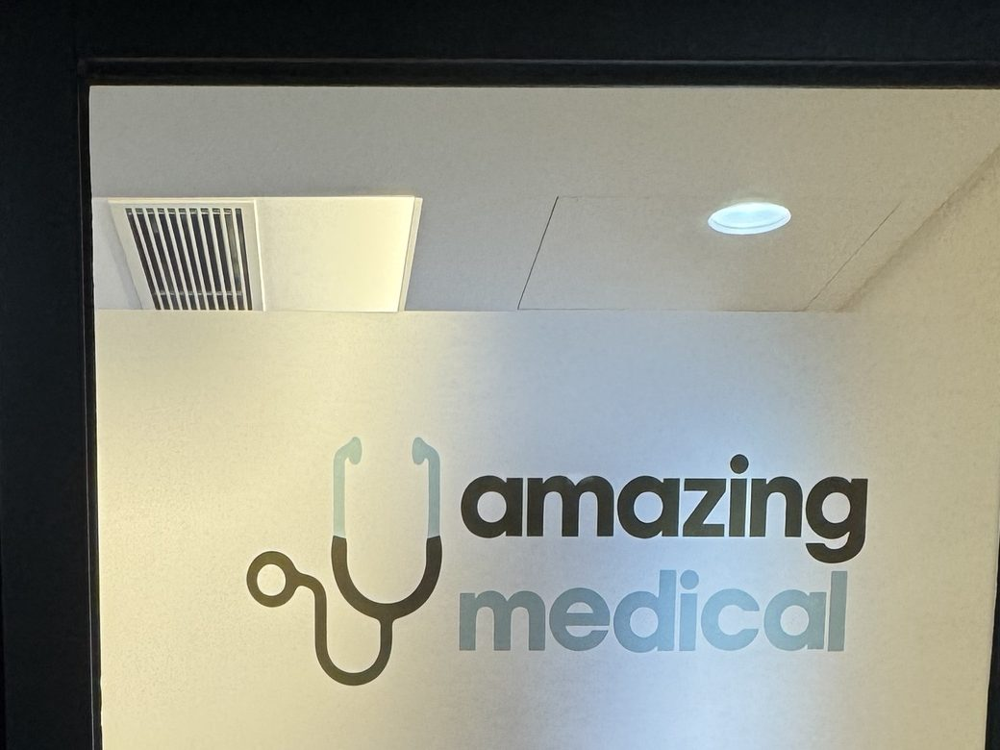

Clinic info
- Address
- 4/F, Yes & Right House, 1–3 Mody Road, Tsim Sha Tsui, Kowloon (Amazing Medical)
九龍尖沙咀麼地道 1–3 號德拓大廈 4 樓全層（Amazing Medical）
Take the lift to 4/F and ring the doorbell. - Opening hours
- Tue–Fri
- 10:00–19:00
- Sat
- 09:30–14:00
- Sun, Mon
- Closed
- Public holidays
- Closed
- 5592 9407
By appointment only
Finding the clinic
Google Maps

- Enter Yes & Right House (德拓大廈) at 1–3 Mody Road.
- Take the lift to 4/F.
- Ring the doorbell at the Amazing Medical glass door.
The clinic


Do I need a doctor's referral?
Before booking, you can ask on WhatsApp whether your situation needs a doctor's referral letter. If you already have a referral letter, medical certificate or reports, please bring them to your first visit.
For family members
If you are enquiring or booking for a parent or family member, please send a WhatsApp message with:
- a brief description of their condition (for example, where the pain is, or whether they have recently had surgery)
- the times that suit them
If they have limited mobility or use a wheelchair, please let me know in advance so I can make arrangements.